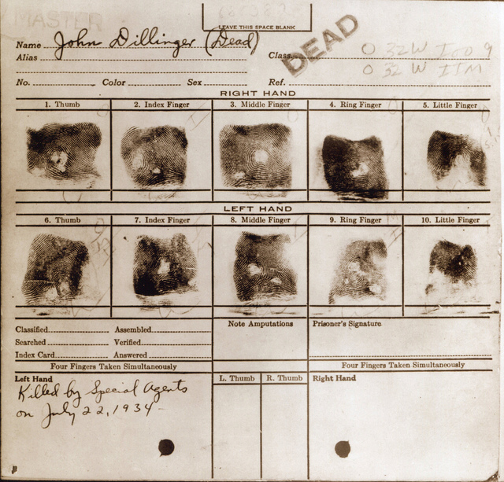

John Dillinger became infamous after committing a series of violent crimes in the Midwestern United States during 1933 and 1934. In less than a year, Dillinger and his gang killed 10 men, wounded 7 others, robbed numerous banks and police arsenals, and committed 3 jail breaks.
At the age of 22, Dillinger committed his first armed robbery; later, he and his accomplice were caught by police. Dillinger's accomplice pleaded not guilty and was sentenced to two years in prison while Dillinger pleaded guilty and received joint sentences of 2 to 14 years and 10 to 20 years in prison. This harsh sentence caused Dillinger to become very bitter and in prison he decided to form a gang of criminals.
Dillinger was released from prison 8.5 years later. Very soon, he robbed a bank in Ohio. He was arrested by police and held in an Ohio county jail. Police found a document on Dillinger detailing a prison break, but Dillinger denied any knowledge of this. However, this plan was used by eight of his friends to escape from an Indiana prison. These prison escapees disguised themselves as prison guards and went to the county jail in Ohio where Dillinger was and asked for his "return" to the Indiana prison. The sheriff became suspicious and was killed while Dillinger and his friends escaped.
Dillinger and his gang soon robbed many banks in several states, stole weapons from two police arsenals in Indiana, freed captured gang members from two different police stations, and killed several police officers.
Police in Arizona apprehended John Dillinger and three of his gang members shortly after he killed a police officer during a bank robbery in Indiana. Dillinger was sent to a county jail in Indiana to await his trial. It was there his most famous escape occurred. Dillinger had his lawyer smuggle in a gun carved from wood that he used to force guards to open his cell. He then took two machine guns, stole a guard's car, and fled to Illinois. This led the Federal Bureau of Investigation (FBI) to become involved and declare that John Dillinger was "public enemy number one". Also, the FBI established a $50 000 reward for information leading to his arrest.
After this dramatic escape, Dillinger and his gang continued to rob banks in several states. While in Chicago, Illinois, Dillinger decided to have plastic surgery to change his facial features and his fingerprints. Two doctors, each having criminal records, performed the procedures. A strong acid was applied to the tips of Dillinger's fingers in an attempt to destroy the ridge patterns.
A month after his plastic surgery, Dillinger was turned in by a prostitute. As Dillinger walked out of a Chicago movie theater with this prostitute, FBI agents surrounded him. When he grabbed his gun and ran toward an alley, FBI agents fired shots that hit and killed Dillinger. After Dillinger was pronounced dead at a local hospital, his fingerprints were taken. Despite his attempts to alter his fingerprints, Dillinger's prints were still successfully identified because each print still had individual ridge characteristics that matched his original prints. In fact, it is likely that with time all the skin damaged on Dillinger's fingertips would have regrown to restore his original fingerprints. These are the fingerprints after his death:

Eventually, twenty-seven individuals were convicted of harboring and aiding John Dillinger and his cronies during their crime spree.